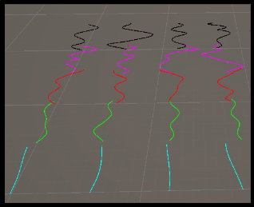
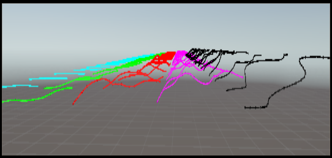
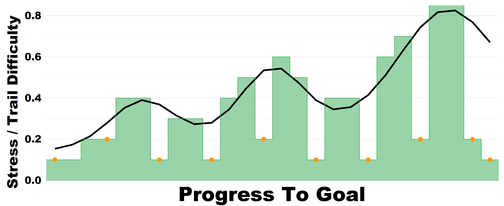

Procedural generation & adaptive pacing
A generated route needs variation in traversal difficulty, while the events during a run need to respond to what players are doing. I developed both systems around a designer-authored pacing curve.
In our CoG demonstration, the curve sets trail difficulty before play and provides the runtime target for event selection and storm pressure. Progress along the trail gives each system a common reference.
Trail difficulty and local overrides
Curve samples select difficulty profiles that control slope, elevation, and curvature. Connected trail segments then constrain the surrounding terrain. A river crossing can replace a difficult slope with flatter terrain: the water already adds a coordination challenge.


{kind=link}

Generating a shared level across different hardware
Hardware-dependent generation originally led me to distribute terrain from the host. I quantized height values, compressed the image, and split the transfer into chunks for clients to reassemble.
The pipeline now combines CPU base noise with GPU terrain shaping and a canonical 16-bit height representation. Peers normally generate locally from the same resolved inputs. The height-image transfer remains available as a fallback; clients still build their local terrain and environment from that data.
Cross-hardware checks have produced closely matching playable terrain. Gameplay objects use host-authoritative placement, while locally generated environmental details can vary.
Runtime correction
The director combines four normalized game-state inputs into an observed stress proxy.
Game state Observed stress proxy
- P · Player state
- × 0.35
- W · Wagon condition
- × 0.25
- T · Storm proximity
- × 0.30
- E · Environment
- × 0.10
Team progress selects the point on the target curve used for comparison; it is not another weighted input.
Event selection filters eligible events by cooldown and estimated effect. Storm speed provides a continuous adjustment between events.
- Below target
- Add pressure through a suitable encounter or a faster storm.
- Above target
- Prefer a relief event or slow the storm to give players recovery time.
The proxy measures game state. Its relationship to player-reported tension remains a research question. See the preliminary evaluation.
Generation timings
4.5 seconds
Isolated heightmap
4097 × 4097 samples
16.8 million height samples
Trail inputs, CPU noise, GPU shaping and readback, and decoding to a CPU-readable heightmap.
15.9 seconds
Large playable world
256 trail segments · ~8.2 km of trail
2061 × 4096 height samples
Trail length estimated from ~32 m per segment. Terrain extends another 256 m before and after the trail.
Terrain, materials, collision, environment, scatter, and navigation, measured through level readiness.
September 2, 2026 · Godot 4.6.3 editor · Ryzen 7 4800H · GTX 1660 Ti · 16 GB DDR4 · Windows 11. Representative recorded runs from repeated development checks, rounded from 4.511 s and 15.910 s. The isolated test omits gameplay modifiers and playable-world construction. The full-level test caps the long heightmap axis at 4096 samples.
Profiling separated generation from the work needed to make the world playable. CPU noise accounted for about 75% of the isolated run; mesh, material, and collider construction accounted for about 54% of the full-level run.